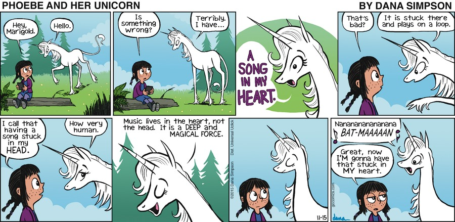
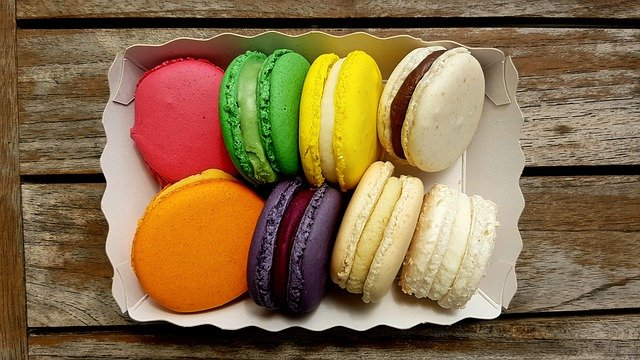

What You Should Know - Comic Life: Illustrating Problem and Solution
 Important Vocabulary
Important Vocabulary
- Comic Strip - pictures and text in boxes that tell a story
- Multi-step - having more than one step
- Equation - a number sentence
- Estimation - an educated guess on an amount
- Sequence - the order something happens
Why Do People Like Comics?
Comic strips and comic books are everywhere! Most of us have read comics. Some of us doodle or draw cartoons.
Why do people like comics?
Read this comic strip. Talk to your partner about why people may like it.
Would you like to read more about Phoebe and her unicorn?

Comics Tell a Story
Read this comic. Talk to your partner about the story.
What is happening?
Comics Have Order
The sequence or order of the images helps to tell the story. Talk to your partner about this Calvin and Hobbes comic strip.
How would you put these images in order?
Comics Use Images and Words
Comics tell a story with images and usually words. Some comics use both images and words, and others only use images.
Do you like comics with images and words or only images? Can a comic with only images tell a good story?
Comics Make You Laugh
Many comics have a funny side. Authors write comics to make you smile and laugh.
Do you like this Calvin and Hobbes comic strip? Did it make you laugh or smile?
Solving Multi-Step Word Problems
You have probably completed word problems in math before. The difference between a multi-step word problem and other word problems is that a multi-step word problem has more than one step needed to find the answer. These types of problems may need you to add and then subtract or multiply and then add. You may need to use any combination of the 4 math operations- addition, subtraction, multiplication, and division.
When completing a multi-step word problem, you need to first think about what the problem is asking. Then, you need to think about what it wants you to find out. Let’s take a look at this problem:
After baking cookies all day, Marie puts the cookies into boxes to sell. She fills 10 boxes and has 4 cookies leftover. Each box holds 8 cookies.

Step 1: What do we know?
- We know Marie bakes cookies.
She put some in the boxes.
There are 10 boxes total.
She has 4 leftover cookies.
Step 2: What do we need to find out?
How many cookies did Marie bake in all?
To help us solve this problem, we need to set up an equation for the problem.
The equation below can help us find the total number of cookies.
We can estimate that Marie bakes less than 100 cookies without solving the equation. We know that 10 times 10 is 100. So, the total number of cookies in this problem will be less than 100.
10(8) + 4 = B
B represents the number of total boxes needed. We can use letters to represent unknown values in equations.
10 is the number of boxes.
8 is how many are in each box.
Then, we need to add the 4 leftover cookies.
- 10(8) + 4 =
- 80 + 4 =
- 84 equals the total number of cookies Marie baked.
Career Connection and Real-World Application
Multi-Step Problem Solving in Careers
Many careers require people to solve multi-step word problems. Bakers, clothing designers and civil engineers are all jobs that solve multi-step word problems everyday. Imagine if a baker needed to know how many cookies they needed to bake to put 8 in each box with a tray of 12 extras.
Clothing designers also use this type of math. Clothing designers need to figure out how many boxes of bags of buttons, zippers, or clasps to order so they can create their designs. Civil engineers use multi-step word problems to figure out how much concrete is needed and how much it will cost for a building project.